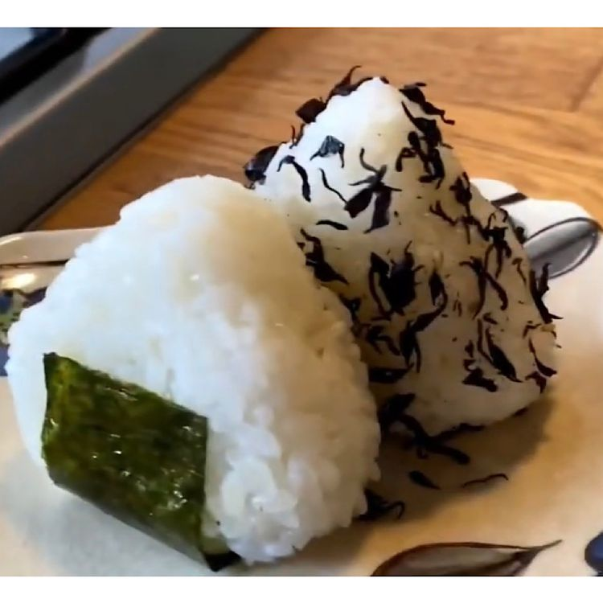

Rice balls (Onigiri)
Home

Description
Taro Saeki describes rice balls in Japan as the equivalent of the western countries' sandwiches. According to Taro, rice balls are a very popular light meal in Japan, are easy to make and are an easy picnic treat.
Ingredients
- 2/3 cup water
- 2/3 short-grain rice, rinsed
- salt to taste
- 3 sheets nori (dry seaweed), cut into 1 inch strips
- seasoned sesame seeds to taste
- shiso with hijiki (dried seaweed flakes) to taste
Steps
- Combine rice and water in a heavy-bottomed pot with a tight-fitting lid. Soak for 20 to 30 minutes. Cover and bring to a boil over medium heat. Once water is boiling, reduce heat to low and cook until water is completely absorbed, 12 to 13 minutes. Remove from the heat; keep covered and steam for another 10 minutes. Remove lid and cool to room temperature, about 20 minutes.
- Wet your hands and form small amounts of rice into triangle shapes if possible, or round balls. Wrap each onigiri with a strip of nori. Season with salt and garnish with sesame seeds and seaweed flakes.